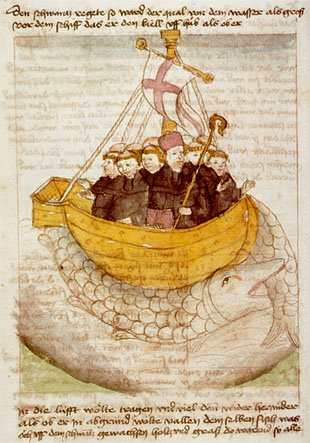

Navigatio
Geographic Tools for Education
Create rich interactive maps from your own CSV data. Visualise, analyse, annotate and share geographic data — no GIS experience needed.
🗺️ Launch Geo Mapper 2D →How to use Geo Mapper 2D
- Upload a CSV file with georeferenced data (latitude and longitude in separate columns)
- Configure the visualisation using drop-down menus in the Control Panel on the left (toggle open/close by clicking the eye icon 👁️)
- View the Legend in the right panel (toggle open/close by clicking the key icon 🗝️)
- Choose from a selection of basemaps and overlays, as required
- Customise spatial data visualisation using symbol configuration
- Configure pop-ups including numerical and categorical data, images, charts
- Animate symbols using time or sequence if data allows (including pulse animation)
- Use Analysis Tools such as Filter and Buffer tools; generate Desire Lines
- Use Measurement Tools e.g. distance, area, generate Survey Points; find georeferences
- Use Drawing Tools including Point, Line, Polygon, Freehand — with export/import options for use in other apps
- Use Bookmarks with configurable tabs to pre-plan presentations and manage cognitive load
- Use Data Editor for instant corrections and/or additions and export as CSV
- Use Lock in changes to update the visualisation so that it is cached
- Save your work using export (HTML and GeoJSON files) and share with others including a 'View only' share option
Explore your data on an interactive 3D globe — same CSV workflow as Geo Mapper 2D.
🌐 Launch Geo Mapper 3D →How to use Geo Mapper 3D
- Upload a CSV file with georeferenced data (latitude and longitude in separate columns)
- Configure the visualisation using drop-down menus in the Control Panel on the left (toggle open/close by clicking the eye icon 👁️) to access Terrain, Basemap, Overlays and Analysis Tools
- Explore the 3D globe using pan, zoom, rotate. It can take a while to learn the controls but it's worth the effort!
- View the Legend in the right panel (toggle open/close by clicking the key icon 🗝️)
- Choose from a selection of basemaps, terrain and overlays
- Customise spatial data visualisation using symbol configuration
- Configure pop-ups including numerical and categorical data, images, charts
- In Analysis Tools, create Elevation Profiles by drawing simple transect lines. 🏔️ An Elevation Profile requires 3D terrain. To enable this, open the Control Panel → Terrain → select Cesium World Terrain or Cesium World Bathymetry
- Animate symbols using time or sequence if data allows (including pulse animation)
- Use Analysis Tools such as Filter and Buffer tools; generate Desire Lines
- Use Measurement Tools e.g. distance, area, generate Survey Points; find georeferences
- Use Drawing Tools — import and use drawings saved in other apps
- Use Bookmarks with configurable tabs to pre-plan presentations and manage cognitive load
- Use Data Editor for instant corrections and/or additions and export as CSV
- Save your work using export (HTML and GeoJSON files) and share with others including a 'View only' share option
Download a CSV, then upload it to Geo Mapper to explore the features. You can edit the data, add columns, and change the visualisation settings.
💡 Tip: after uploading, use the Data Editor to add a new column — for example, notes from a field visit — then download your updated CSV.
Some glimpses of what's possible using the Geo Mapper apps:
%20HQ%20GIF.gif)
.gif)
%20x2%20HQ%20GIF.gif)
%20to%20showcase%20bookmarks%20HQ%20GIF.gif)
Visualisations of the spatial pattern of growth in selected urban areas of England and Wales from 1880–2013 using data from the Valuation Office Agency (VOA).
Launch How Does Your Urban Grow? →A football match visualiser showing attacking momentum as tidal surges on a WebGL pitch, synced to 'real' match audio. The demo data shows a 10 goal charity Boxing Day thriller between two pub teams featuring a stellar cast of players from some of Europe's top clubs 😉. The players' names were generated with AI, so any similarity to actual persons, living or dead, is purely coincidental. You can load your own data from any match using the sample data set as a model.
An animated race chart tracking PISA maths, reading and science scores for 15-year-olds across sovereign states and UK nations from 2000–2022, enabling comparison of trajectories over time (restricted by availability of reliable data).
Launch Edu Racer →A line chart racer showing changes in the first cherry blossom bloom in Japan — Kyoto over 1,200 years and eight other cities from 1953–2024.
Launch Sakura Racer →An animated line chart racing through every official IAAF/World Athletics ratified men's and women's marathon world record from 1908 to 2026. Watch the records tumble decade by decade.
Launch Marathon World Record →An animated bar chart race visualising Olympic and Paralympic medal tallies across the history of the Games. Watch countries rise and fall through the decades.
Launch Geolympics Racer →Convert British National Grid references to latitude and longitude (WGS84). Supports single conversions and batch processing — paste a list of grid references and download the results as a CSV ready to upload to Geo Mapper.
Launch BNG Converter →Guides will be added here once the feature set has stabilised.